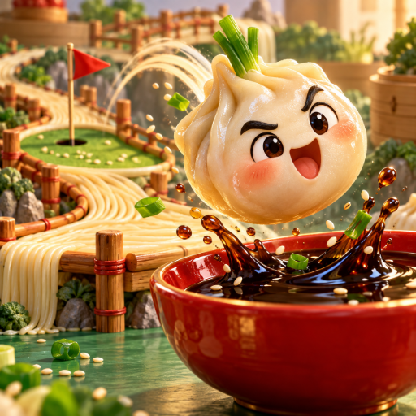

<- all projects

Dumpling Golf Club
PC
Volume
Live
Aim small. Land deliciously.
Launch opinionated dumplings across noodle bridges and chopstick obstacles, bounce off bamboo rails and land in the dipping bowl. Drag back from a dumpling to aim and set the power, then release to shoot. Take as many shots as you need, though fewer shots earn extra stars. Each food stall adds new obstacles, from moving pieces to sauce and steam, and along the way you meet new fillings and put on a very unusual food festival. 90 tabletop courses across six stalls, eight fillings to experiment with and a night-market corner to furnish.